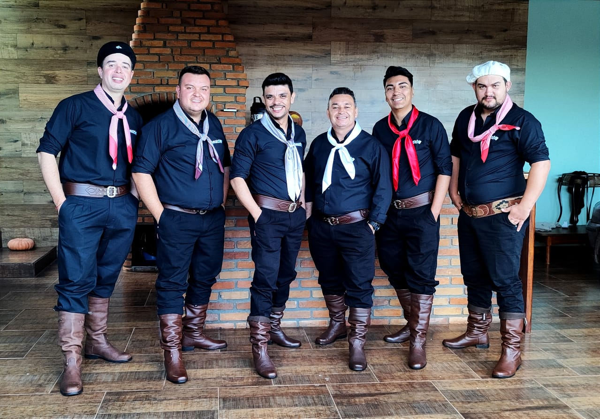

Grupo Vanerô é voltado para animação em shows / bailes com um repertório diversificado que atende tanto baile tradicionalista gaúcho ou show misto com um estilo de vanerão com muita percussão e swing. O grupo Vanerô é originário da grupo Acústico 7 já conhecida no mercado há mais de 15 anos, a qual atenta à constante evolução e tendências do mercado artístico musical, se viu obrigada a dar um “upgrade” trazendo uma nova identidade e a atual nomenclatura.
Baterista
Sanfoneiro
Produtor
Vocalista
Produtor
Percussão
Vocal
Guitarrista
Baixista